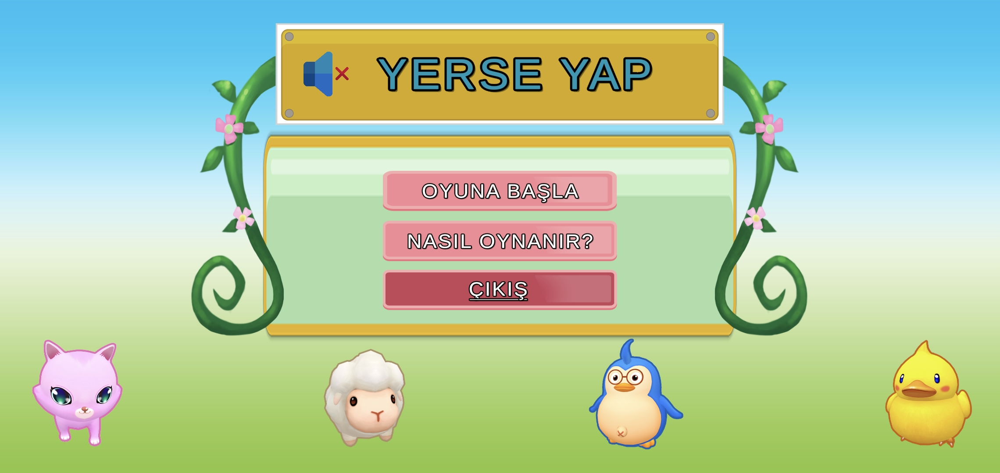
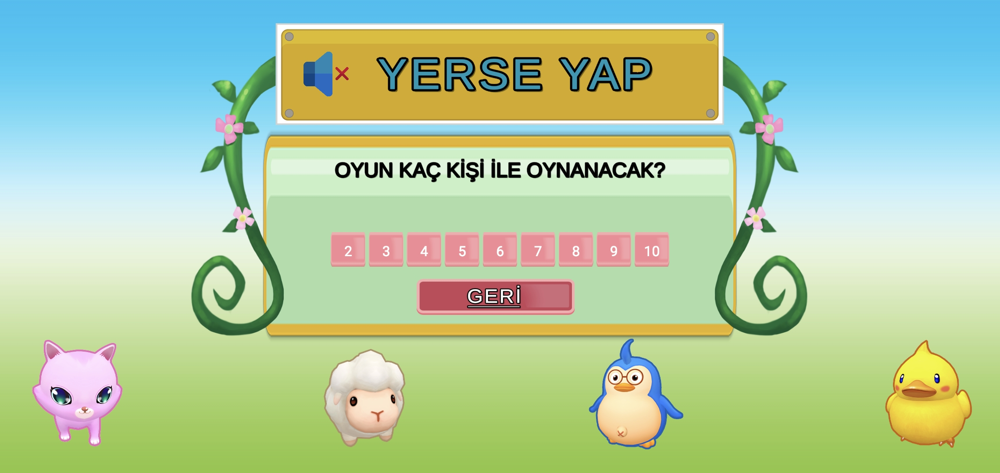
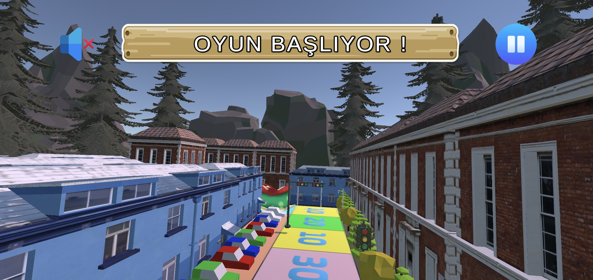
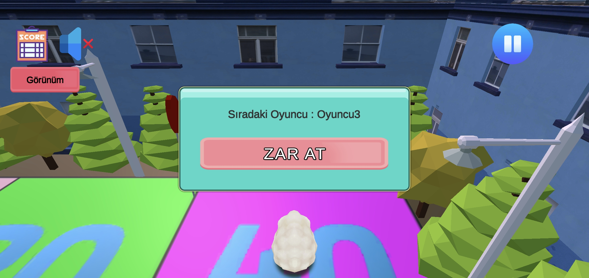
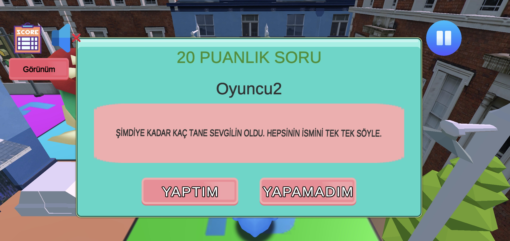
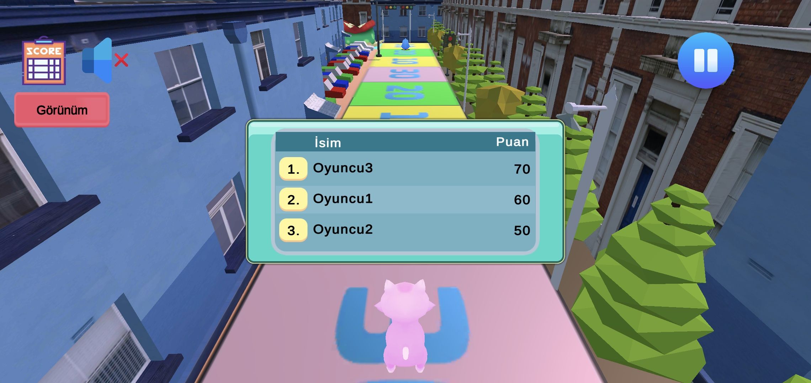
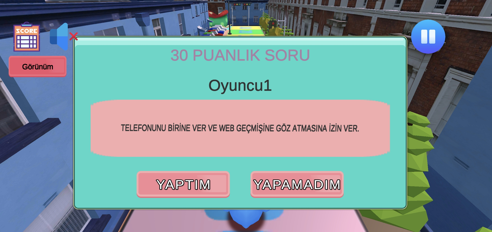

YerseYap
Zar At, İlerle, Görev Yap, Puan Topla
YerseYap; arkadaş ve aile buluşmaları için renkli 3D tahta parti oyunudur. 2–10 oyuncu seçin, zar atın, renkli karelere gelin, eğlenceli görevleri tamamlayın ve puan toplayın.
YerseYap Oyun İçi Görseller
Menü, oyun akışı, görevler ve skor tablosundan ekran görüntüleri.

Ana Menü
Oyuna başla, kuralları oku veya çık.

Oyuncu Sayısı
Oyun kaç kişi ile oynanacak? (2–10 arası seçim)

Oyun Başlıyor
Numaralı renkli kareler ve sevimli karakterlerle 3D tahta.

Zar At
Sıra sendeyken Zar At butonuna bas ve ilerle.

Görev Ekranı
Geldiğin karedeki görevi oku. Yaptıysan Yaptım, yapamadıysan Yapamadım'a bas.

Skor Tablosu
Tüm oyuncuların puanlarını anlık takip et.

Yüksek Puanlı Görevler
Daha zor kareler daha fazla puan verir — kazanmak için risk al!
YerseYap Nasıl Oynanır?
Grup oyun geceleri için basit kurallar.
1) Oyuncu sayısını seç
2 ile 10 arkadaşını topla ve yeni oyun başlat.
2) Zar at ve ilerle
Sırası gelen kişi zar atar ve attığı zar kadar ilerler.
3) Görevi tamamla
Geldiği noktadaki puana göre bir görev verilir. Gerçekleştirirsen Yaptım'a bas ve puan kazan.
4) En çok puanı topla
Oyun bitene kadar devam et. En çok puanı toplayan oyunu kazanır!
Neden YerseYap?
Partiler, pijama partileri ve aile oyun geceleri için ideal.
Sevimli 3D Dünya
Renkli sokaklar, sevimli hayvan karakterleri ve canlı tahta.
Grup Eğlencesi
Tek telefon veya tablet etrafında 2–10 kişi için tasarlandı.
Puana Dayalı Görevler
10, 20, 30 veya 40 puanlı kareler — yüksek risk, yüksek ödül.
Hesap Gerekmez
Kayıt olmadan doğrudan oyuna başla.
YerseYap ile Eğlenceyi Başlat
YerseYap, Sogepps uygulama ailesinin yeni parti oyunudur.